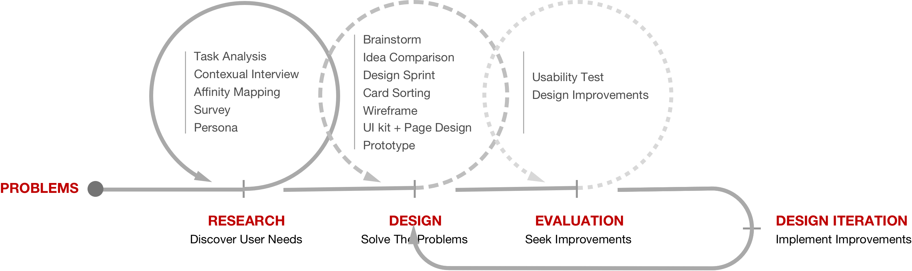
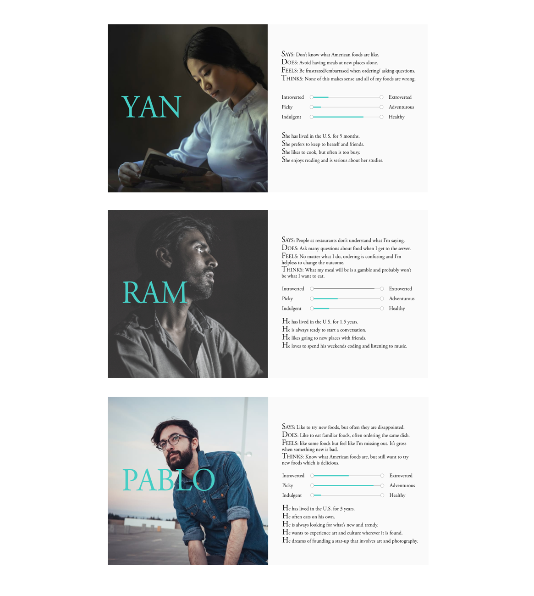
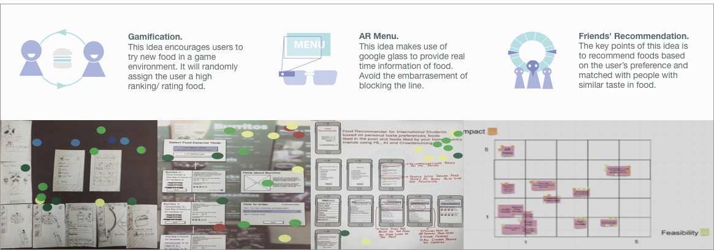
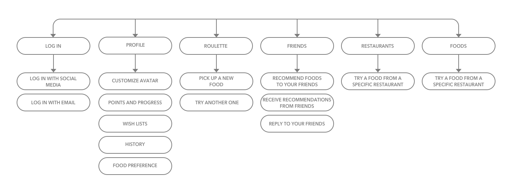
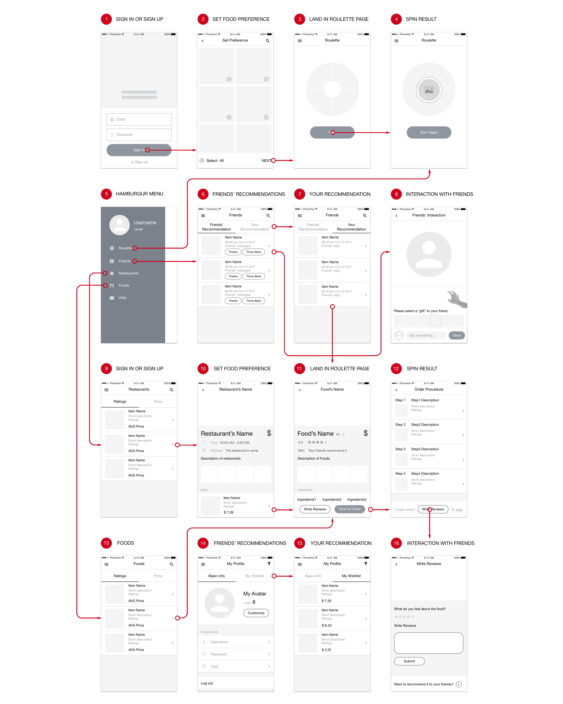
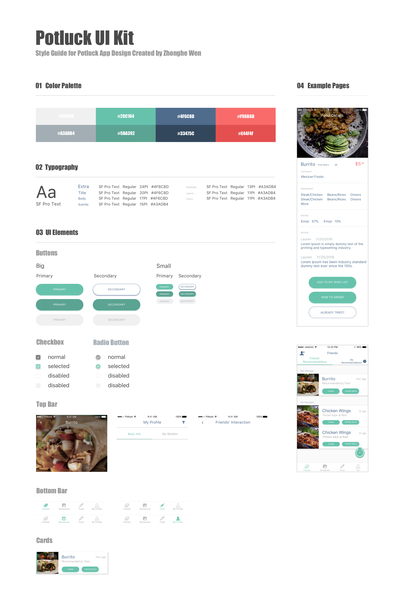
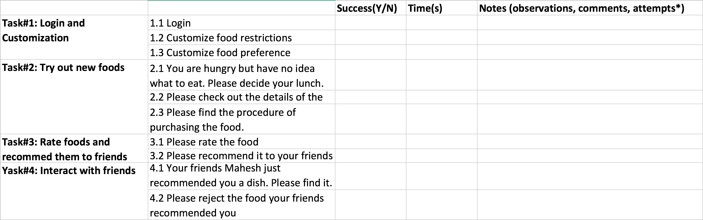
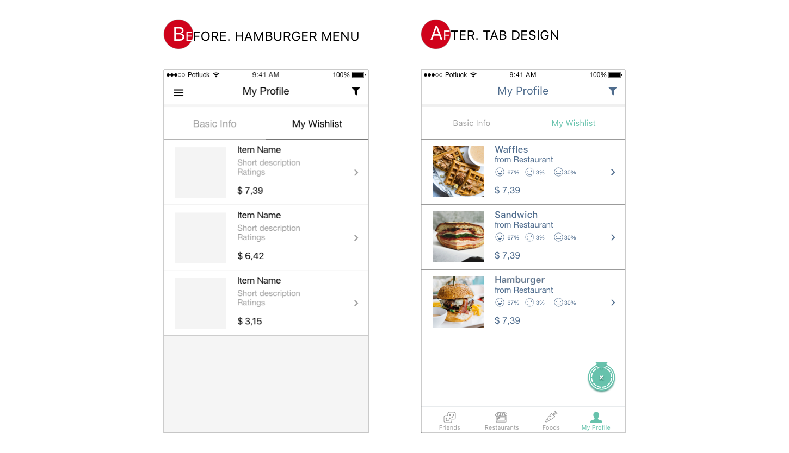
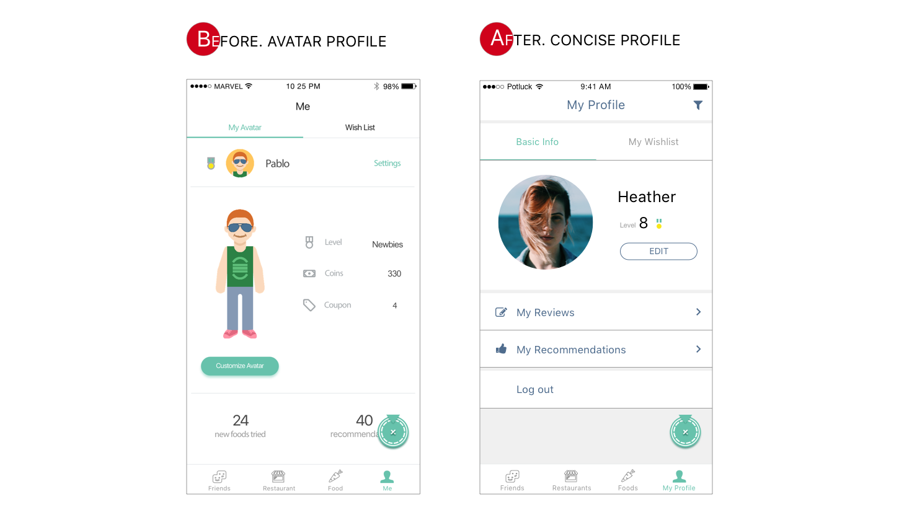

OVERVIEW
Problem Space
When international students just come to the U.S. it is a pain for them to order foods in restaurants. They don't understand the menu. They don't understand the social norm. Even worse, they may don't understand the accent. So our team want to help international students solve the problem.
Methodology
{kind=link}
Outcomes
Our solution is Potluck, a mobile app which allows user to find tasty foods through interaction with friends. Potluck also provides food suggestions and appropriate instructions on ordering process.
Desgin Hightlights
Menu is not straightforward? We decided to find a another way to help user identify tasty foods. According our research, our user believe their good friends have similar taste with them. They would love to try the food recommended by their friends. Thus, We designed the friends' recommendation feature including various interactions between friends. User could send flowers to express "appreciate it". Or, they could throw eggs to their friends if their friends are making fun of them.
Struggle to decide each meal? We designed a roulette feature to help user make meal decision. The system will give suggestions based on users' food preference profile as well as their "favorite" history.
Unclear about the ordering process? We designed detailed instruction page to help user with their ordering process. With this feature, user no longer need to worry about being awkward caused by incorrect pronunciation, unfamiliar social norm, etc.
Prototype
RESEARCH
Target User
To understand the target user and user needs we conducted contexual interviews and analyze the results through affinity mapping. Afterwards, we further conducted survey to confirm our hypothesis and generated persona. CHECK RESEARCH DETAILS.
Task Analysis
To narrow down the problem scope, we conducted task analysis of several on-campus restaraunts to understand the procedure of on-campus dining experience. From the task analysis (check images) we could see the dining experience varied case by case. For instance, in restaurant like Panda Express, customers need to wait in line and order their dishes step by step. But in restaurant like Waffle House customers need to sit at a table and wait for the waiter. These differences could cause confusion for new coming student. But what are the specific questions encountered by students?
{kind=link}
Contexual Interview and Affinity Mapping
To understand the context and discover the details of the problem, we did 9 contexual interviews and post interviews. Through affinity mapping we found:
- People prefer familiar flavor but at the same time are open-minded to new foods.
- People value their friend's opinions.
- People have difficulties understanding the menu/ordering process.
{kind=link}
Survey
To validate the insights from affinity mapping we choose to conduct a survey on it which was released on Quatrics and got 60 effective responses. Results showed that the top 3 concerns for foods are price, flavor and friends' recommendation. And here are some important statistics about it.
- 53/60 Try new food because of recommendation from friends
- 51/60 Like to try new food
- 32/60 Need more than moderate help on dining
- English is a 2nd+ language
- Unfamiliar with American food choices
- New to America (less than one year)
- Wish to avoid public embarrassment
- Would like to try new foods
User Needs
Through solid research we concluded important user needs. Here are the three most important findings.
- Understand which foods are tasty for them (not just generally tasty)
- Easily make a decision when facing multiple options.
- Understand the menu and the order procedure (e.g. what’s in a combo. Or whether they need to wait for the server come to them or they need to come to certain areas to order the foods.
Persona
{kind=link}
Thoughts on Persona
We build the persona based on the survey result. In the process assigning the persona name\gender\nationality we gradually build a clear image of our target user and understand their personality. These understandings help us predict user' response to our design.
DESIGN
Design Needs and Design Ideas
At first, We translated the user needs to our design needs and here were three most important design needs:
- Make use of friends’ recommendation to select tasty foods. (because people believe “people from the same place have similar taste”)
- Help them make a decision when they have multiple options.
- Provide instructions on the menu and ordering process.
We then conducted a brainstorming session to generate creative ideas. We did a great job that we finally have 40+ ideas. However, we couldn’t include overwhelming design ideas so we needed to narrow down the ideas. One method is to critique ideas based on its feasibility and efficiency. The other method is to held a design sprint to collect feedback from our peers. We finally choosed the gamification mobile app idea. First, people can easily get access to a mobile app since all students have their smartphone and bring it everywhere. Second, students feel more immersive in a game setting. Third, we get feedback saying roulette will be super helpful helping them make meal decisions.
{kind=link}
Information Architecture
The design sprint helped us decide the major idea, gamification mobile app. We continued to come up with features supporting the system. However, what is the ideal structure of the system? To understand it we further conducted a card sorting using the online tool, Optimal Workshop.
Based on the results, we designed the information architecture as below.
{kind=link}
Thoughts on Design Process
There is always no clear boundary between research and design. When we came to the design phase sometimes we still were unsure about some details. So it's really important to come up with quick and dirty research to gather information to support design. For example, when we designed the information architecture we were close to the deadline so we quickly created the online study and diffused it to students who sat near us. To be honest, these students were not typical target user. But we had to make trade off because of the time constraint. Certainly, we made the decision because we believed our target user and these participants had similar mental model towards the features. The result were still valuable which were proved by our following evaluation research.
Wireframe
{kind=link}
UI Kit
In our team I was the only design background student so I took the design lead responsibility. But our team members also expressed their interest designing the pages. So I carefully read the ios design guideline, designed the UI kit and several Sample pages for them to make sure the design could be consistent. And I conducted the final adjustment of our design.
{kind=link}
Thoughts on UI Kit Design
when I was designing the UI kit I had no idea where to start. So I decided to carefully read the IOS design guideline to get inspirations. The design guideline introduces important concepts like direct manipulation, feedback, metaphors, user control, etc. It helps me notice the details I overlooked in the past. For instance, the design guideline talks about the color scheme and the lighting condition, saying there always should be two color theme. One is used in high light condition while the other is used in dark environment.
However, there are still explosive information in IOS design guideline so I also searched and learned how the other designers designed their UI kit and what components should be included. Combining both of them, I created the UI kit. But when we worked on the rest of mobile pages I found my UI kit still lacked components. My teammates would self-create those design components which bring inconsistency, although we had discussed the visual style and reached a descision at begining of the design phase. At this time I would create the new component and update the UI Kit in our google drive. It helped with consistent visual style but I still needed to do adjustments to ensure the details.
If I could do it again, I will communicate with my teammate more frequently and tried real-time updated collaborative tool (if we could find an appropriate tool we won't spend a lot of time uploading/ dowloading the UI kit).
Design Iterations
Before official start of the detailed design page we decided to conduct a pilot study to find possible severe problems. We designed a set of important tasks as below. We measured the task time and task success and asked participants to conduct think-aloud. The result was unexpected but valuable. And we conducted design iterations based on the feedback.
{kind=link}
Navigation
According to the usability test, we found 3 of 3 of participants reported they had navigation problems. They said they had "no idea where they were". They couldn’t clearly and confidently know where to go to another section (usually it took a while for them to understand the hamburger menu). This finding made us reflect on the hamburger menu design and finally replaced it with the tab design.
{kind=link}
Minimalism
We also asked participants what they felt about the avatar. They reported that the single avatar page seemed unrelated to the other elements. They were confused. After we explained the coins they earned by recommendations could be used for customizing avatar they said they would rather have coupons. Their feedback drove us to think about the avatar design. It didn't work in they way we expected and against the minimalism principle. So we finally decided to remove it and made the concise profile page.
{kind=link}
Current Design

challenges of the whole project
Contradictory Feedback
When we conducted our usability testing. Users hold very different opinions for the friends' interaction. Some of them thought it is rude to throw back the dishes to their friends While others think it's really funny and interesting. Through discussion, we decided to keep this "throw back" function, but we also added "kind" interaction to allow users to send flowers and say thank you to their friends.
Differences between Yelp and Potluck
We were asked many times "what are the differences between you and Yelp?". The answer is, Potluck finds tasty foods based on friends' interaction. It doesn't rely on pure rating or text/picture description to tell user what is tasty. In addition, various friends' interaction make user more engaged in our app. Potluck also provides features to solve other dining problems like making meal decisions or communication problems with server.